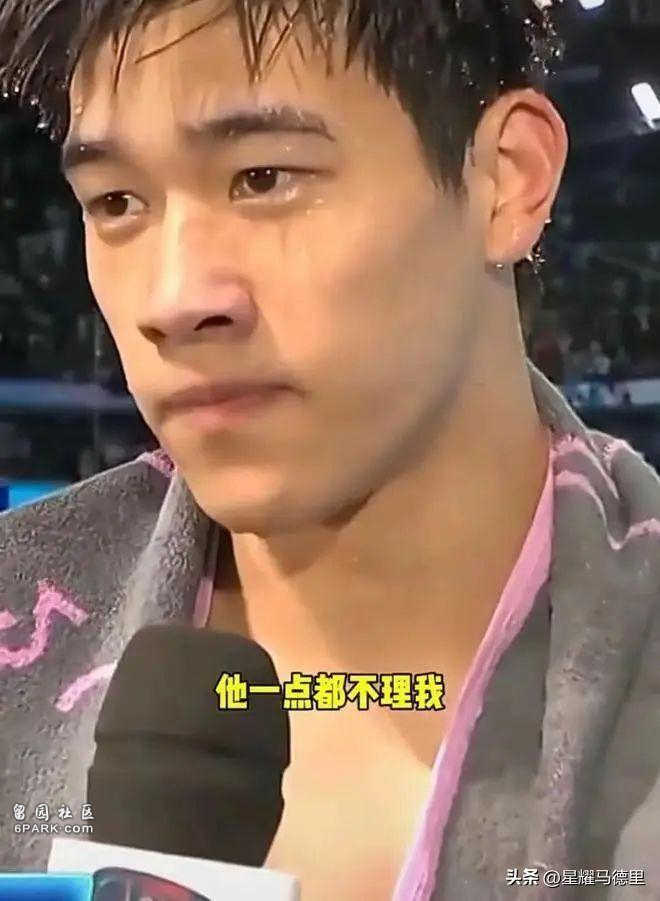
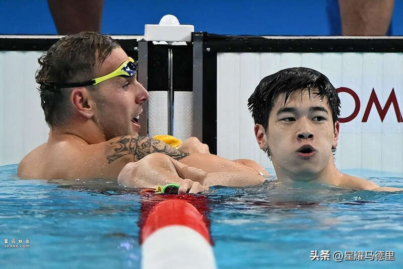
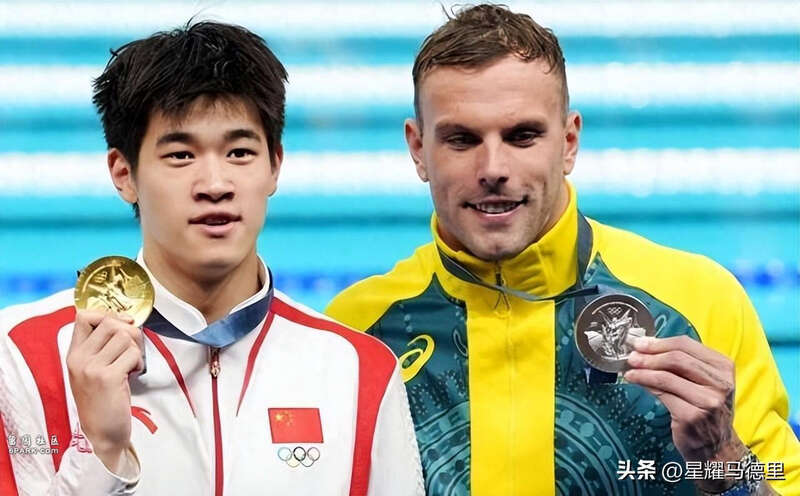
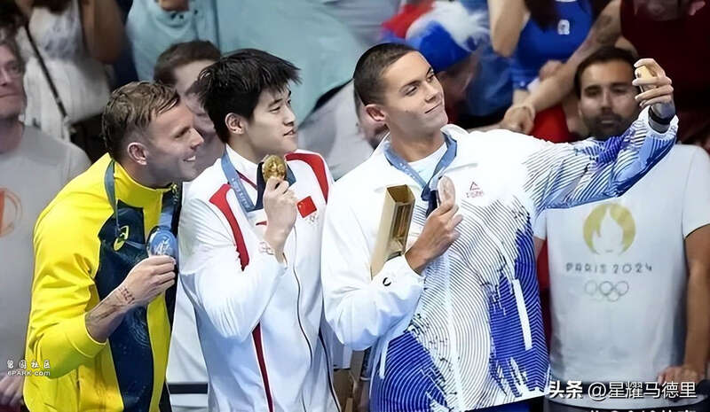

北京时间8月6日，20岁的中国游泳名将潘展乐，在与央视记者王冰冰的连线中，谈起了此前自己与澳洲名将查尔莫斯之间的误会。
在此前100米自摘得金牌后，潘展乐赛后语出惊人表示，获得亚军查尔莫斯有些看不起中国游泳队，预赛和他打招呼根本不理人。而在被潘展乐点名批评后，查尔莫斯的社媒账号也遭到了中国网友的攻陷和怒喷。

潘展乐表示：“其实那一天也许他真是没听到。那天结束以后，查尔莫斯在社交平台上问了我，说他自己被网暴了。反正后面就是误会解除了。”

潘展乐透露，现在包括查尔莫斯在内的外国游泳选手都老实很多，不敢再对中国选手傲慢无礼：“查尔莫斯见到我会跟我打招呼，最后一天还跟我换了个泳帽。现在其他外国运动员不只是见到我，见到我们中国游泳队都会给我们打招呼。”相信外国选手态度改变不仅是因为被网暴，更重要的原因是中国游泳队本届奥运会出色的表现。

不少网友纷纷调侃潘展乐：“00后整顿世界泳坛！”：“果然还得实力说话啊哈哈哈，有成绩就是硬气！”：“做得好！有了成绩说话，现在谁也不敢看不起中国游泳队！”：“自信的潘展乐，确实太吸粉了！”

巴黎奥运会的游泳项目已经落下帷幕，而刚满20岁的潘展乐无疑是本届奥运会中国游泳最大的惊喜。潘展乐不仅以刷新世界纪录的46秒40的成绩，摘得100米自由泳金牌，还和队友携手夺得了男子4×100混合泳接力的金牌，一举打破了美国队对该项目长达40年的垄断。毫无疑问，天赋出众的潘展乐，会是未来中国游泳新的领军人物。
Advertisements